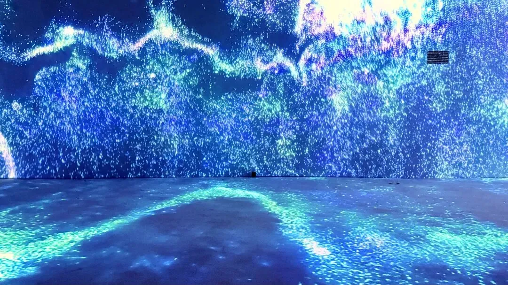
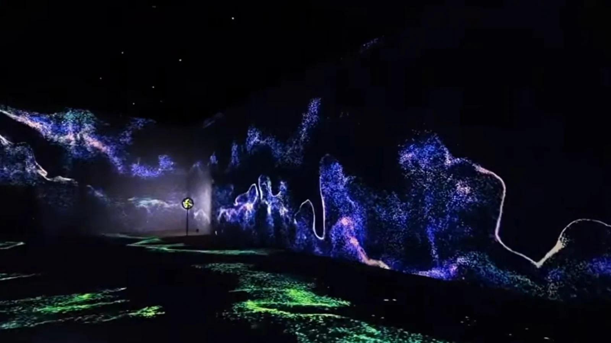
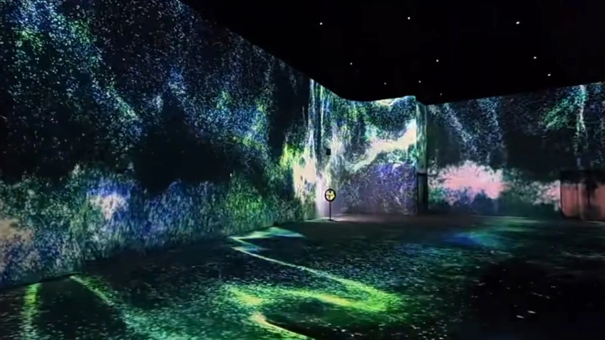
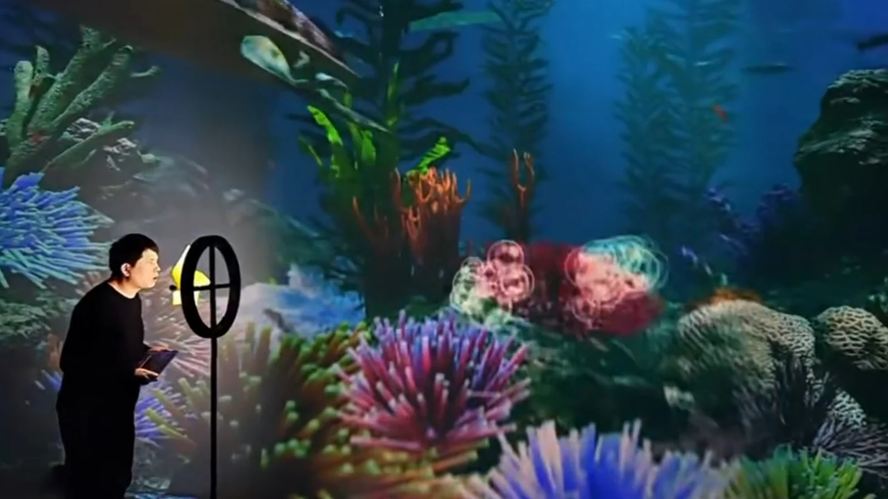

Quantum Isle
量子荒岛
流光粒子海浪 × 风车吹气互动：为「地下 3000 米」定制的沉浸式光影互动体验。
由 Blender 海浪模拟生成的粒子系统铺满洞壁与地面，光点随浪涌起、翻卷、退散；四面墙上的感应风车捕捉游客吹出的气流，粒子从吹气的方向飞出，化作成群的荧光蝴蝶或一串串上浮的气泡。
Flowing particle waves × breath-powered pinwheels: an immersive light interaction experience built for a space "3,000 metres underground".
A particle system generated from Blender ocean-wave simulation covers the cave walls and floor, its points of light rising, curling and receding with each wave. Wind-sensing pinwheels on all four walls pick up each visitor's breath, and particles fly out from that direction as swarms of glowing butterflies or strings of rising bubbles.
量子荒岛位于《地心谷》的「地下 3000 米」。无数光点汇成海浪，在黑暗中涌起、翻卷，又退散成星尘。
墙上的风车留给孩子：凑近吹一口气，蝴蝶从吹气的方向飞出，气泡从面前升起，一直漂到穹顶。
Quantum Isle sits "3,000 metres underground" in Earth Core Valley. Countless points of light gather into waves that rise and curl in the dark, then scatter into stardust.
The pinwheels on the walls are for children: lean in and blow, and butterflies fly out from the direction of your breath while bubbles rise in front of you, drifting all the way up.



